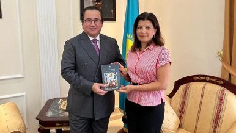
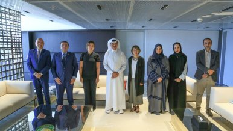
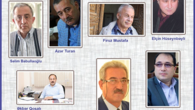
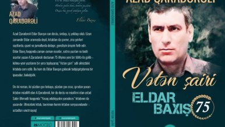
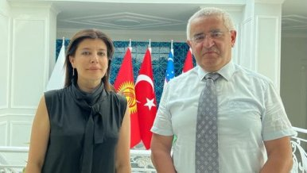
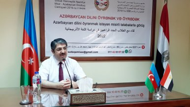
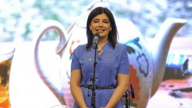
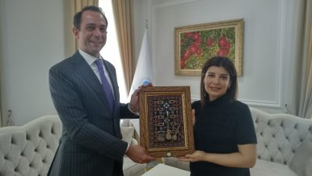
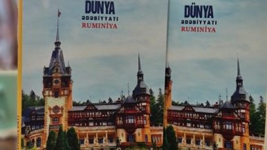

Sənət və ədəbiyyat dərgisi
Haqqımızda
Reklam
Əlaqə
Ana səhifə
Gündəm
Müsahibə/Sorğu
Sənət
Ədəbi gənclik
Kino/Teatr
Fəlsəfə
Foto
Video
Digər
Blog
Səsli kitab
Elektron kitabxana
Gündəm

Gündəm
02 Sentyabr 2022 / 15:36
Beynəlxalq Türk Mədəniyyəti və İrsi Fondunun prezidenti Günay Əfəndiyevanın Qətərdə görüşləri davam edir
Gündəm
01 Sentyabr 2022 / 14:45
Beynəlxalq Türk Mədəniyyəti və İrsi Fondunun prezidenti Günay Əfəndiyevanın Qətərdə görüşləri davam edir

Gündəm
30 Avqust 2022 / 10:10
Beynəlxalq Türk Mədəniyyəti və irsi Fondunun əməkdaşlıq sərhədləri Qətərə qədər genişlənir

Gündəm
15 Avqust 2022 / 16:41
Azərbaycan Yazıçılar Birliyinin on üçüncü qurultay öncəsi məruzələr kitabı nəşr olunub
Gündəm
15 Avqust 2022 / 15:44
Günay Əfəndiyeva: “Hun-Türk Qurultayı kimi tədbirlərin Bursada və Şuşada, Türküstanda və Oşda, Səmərqənddə və Mərvdə də təşkil olunması mühüm önəm daşımaqdadır”.
Gündəm
12 Avqust 2022 / 16:55
Azərpaşa Nemətov "Şərəf" ordeni ilə təltif edilib
Gündəm
09 Avqust 2022 / 11:00
Həyatının mövzusunu yazıçıya hədiyyə edən qadın
- Kənan Hacı yazır

Gündəm
06 Avqust 2022 / 11:25
Eldar Baxış haqqında kitab çap olundu

Gündəm
04 Avqust 2022 / 14:41
Beynəlxalq Türk Mədəniyyəti və İrsi Fondu müxtəlif mədəniyyətləri bir araya gətirməyə davm edir
Gündəm
02 Avqust 2022 / 09:08
Beynəlxalq Türk Mədəniyyəti və İrsi Fondunun prezidenti Günay Əfəndiyevanın Qətərdə görüşləri davam edir

Gündəm
01 Avqust 2022 / 11:36
Misirdə Azərbaycan dilini öyrənmək istəyənlərin sayı artır

Gündəm
27 İyul 2022 / 17:08
Günay Əfəndiyeva: “Reza Deqatinin fotoşəkillərinə baxarkən insanlar həm təsirlənir, həm də heyranlıq duyurlar”.
Gündəm
22 İyul 2022 / 17:41
Serbiyada Vaqif Səmədoğlunun "Azadlıq və mən" adlı şeirlər kitabı nəşr edilib.
Gündəm
20 İyul 2022 / 12:28
Beynəlxalq türk Mədəniyyəti və irsi Fondu Qazaxıstanla yeni əməkdaşlığa qədəm qoyur
Gündəm
02 Sentyabr 2022 / 15:36
Qadın gücünün poeziyası -
Mişel Cassir yazır

Gündəm
15 İyul 2022 / 15:42
İsveç Krallığının Səfiri Beynəlxalq Türk Mədəniyyəti və İrsi Fondunu ziyarət edib
Gündəm
08 İyul 2022 / 16:24
Beynəlxalq Türk Mədəniyyəti və İrsi Fondu Ərəb Dünyası ilə əlaqələrini genişləndirir

Gündəm
06 İyul 2022 / 09:13
“Dünya ədəbiyyatı” dərgisinin “Rumıniya” sayı nəşr olunub
1
2
3